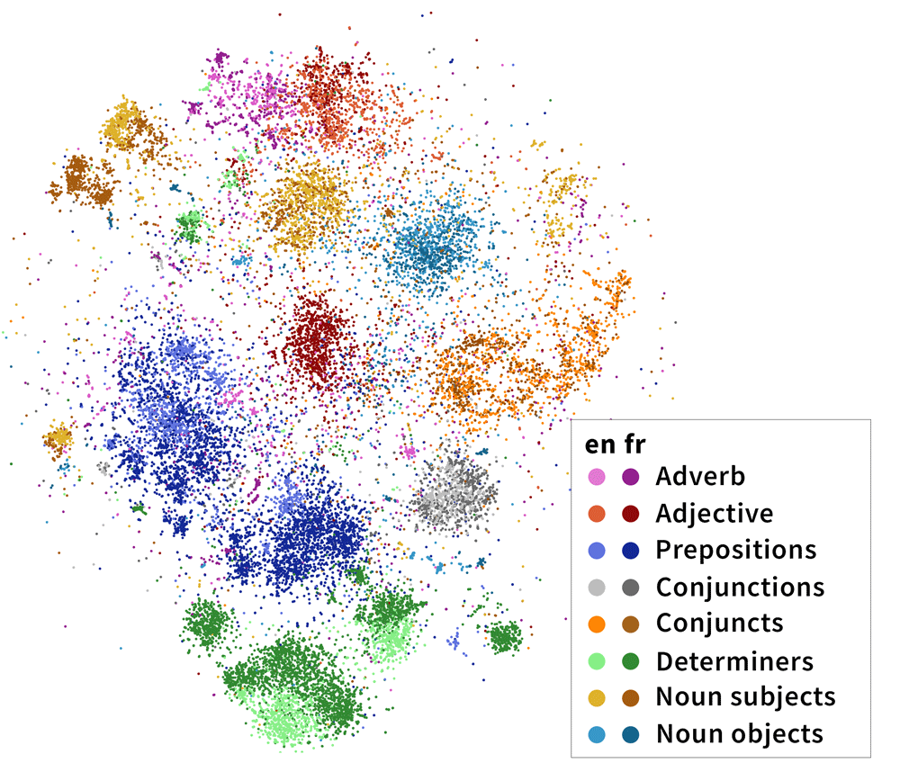
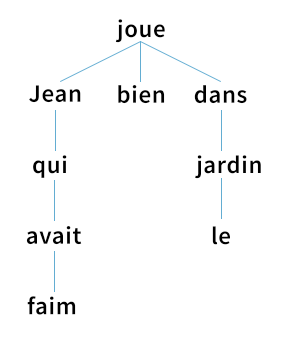
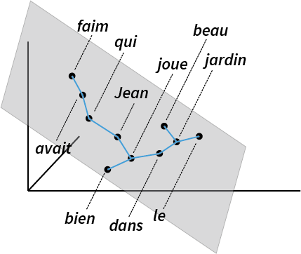
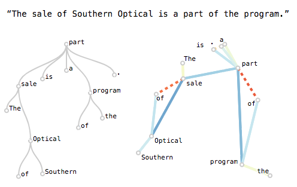
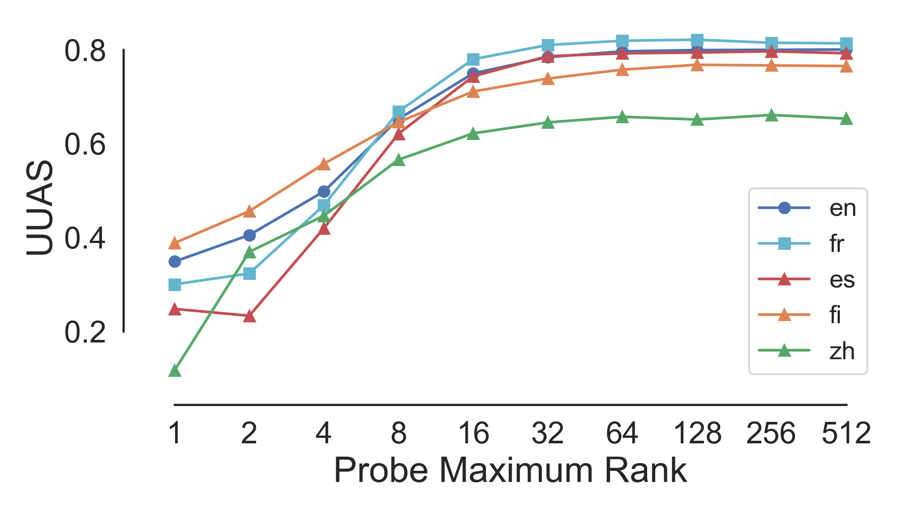
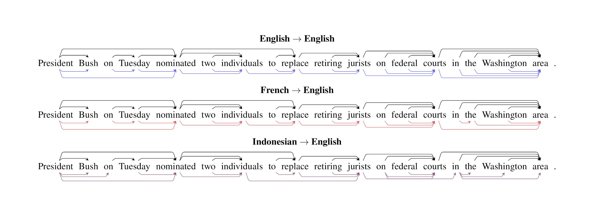
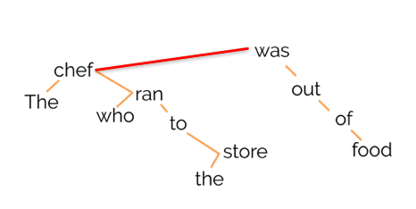
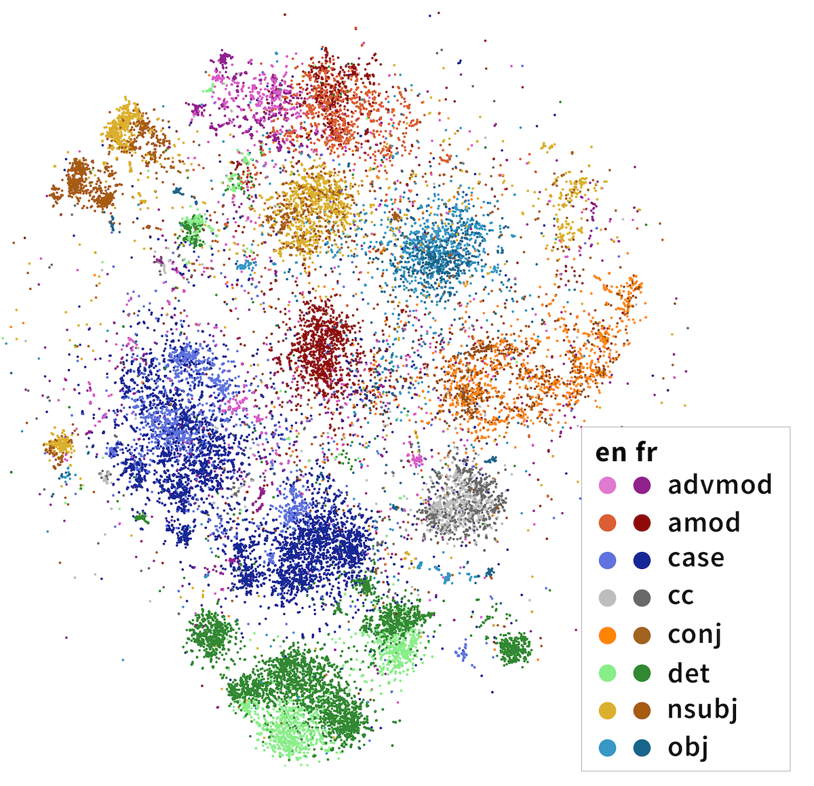
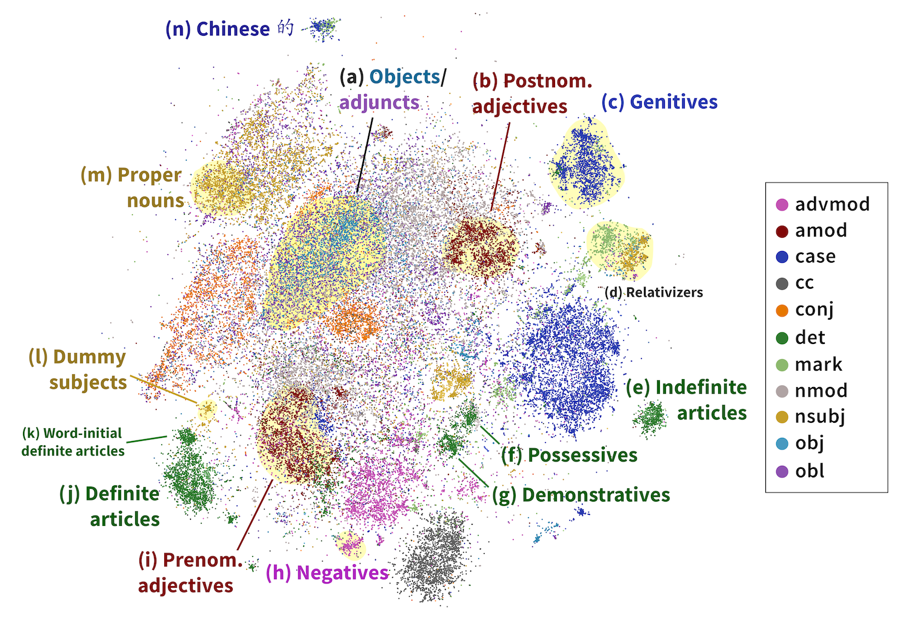

We projected head-dependent pairs from both English (light colors) and French (dark colors) into a syntactic space trained on solely English mBERT representations. Both English and French head-dependent vectors cluster; dependencies of the same label in both English and French share the same cluster. Although our method has no access to dependency labels, the dependencies exhibit cross-lingual clustering that largely agree with linguists’ categorizations.
If you ask a deep neural network to read a large number of languages, does it share what it’s learned about sentence structure between different languages?
Deep neural language models like BERT have recently demonstrated a fascinating level of understanding of human language. Multilingual versions of these models, like Multilingual BERT (mBERT), are able to understand a large number of languages simultaneously. To what extent do these models share what they’ve learned between languages?
Focusing on the syntax, or grammatical structure, of these languages, we show that Multilingual BERT is able to learn a general syntactic structure applicable to a variety of natural languages. Additionally, we find evidence that mBERT learns cross-lingual syntactic categories like "subject" and “adverb”—categories that largely agree with traditional linguistic concepts of syntax! Our results imply that simply by reading a large amount of text, mBERT is able to represent syntax—something fundamental to understanding language—in a way that seems to apply across many of the languages it comprehends.
Our results are presented in the forthcoming ACL 2020 paper, Finding Universal Grammatical Relations in Multilingual BERT. This post draws from the paper, which is joint work with John Hewitt and Chris Manning. You can also find the code here.
If you’d like to skip the background and jump to the discussion of our methods, go here. Otherwise, read on!
Learning Languages
Past childhood, humans usually learn a language by comparison to one we already speak.[1] We naturally draw parallels between sentences with similar meanings—for example, after learning some French, one can work out that Je vis le chat mignon is essentially a word-for-word translation of I see the cute cat. Importantly, humans draw parallels in syntax, or the way words are organized to form meaning; bilinguals know that mignon is an adjective which describes the noun chat, just as cute describes the noun cat—even though the words are in the opposite order between languages.
How do we train a neural network to understand multiple languages at the same time? One intuitive approach might be to equip the neural network with a multilingual dictionary and a list of rules to transfer between one language to another. (For example, adjectives come before the noun in English but after the noun in Khmer.) However, mirroring recent developments in monolingual neural networks, one more recent method is to give our neural network enormous amounts of data in multiple languages. In this approach, we never provide even a single translation pair, much less a dictionary or grammar rules.
Surprisingly, this trial by fire works! A network trained this way, like Google’s Multilingual BERT, is able to understand a vast number of languages beyond what any human can handle, even a typologically divergent set ranging from English to Hindi to Indonesian.
This raises an interesting question: how do these networks understand multiple languages at the same time? Do they learn each language separately, or do they draw parallels between the way syntax works in different languages?
Knowing what it means to "know"
First, let’s ask: what does it even mean for a neural network to "understand" a linguistic property?
One way to evaluate this is through the network’s performance on a downstream task, such as a standard leaderboard like the GLUE (General Language Understanding Evaluation) benchmark. By this metric, large models like BERT do pretty well! However, although high performance numbers suggest in some sense that the model understands some aspects of language generally speaking, they conflate the evaluation of many different aspects of language, and it’s difficult to test specific hypotheses about the individual properties of our model.
Instead, we use a method known as probing. The central idea is as follows: we feed linguistic data for which we know the property we’re interested in exploring (e.g. part-of-speech) through the network we want to probe. Instead of looking at the predictions of the model themselves, for each sentence we feed through, we save the hidden representations, which one can think of as the model’s internal data structures. We then train a probe—a secondary model—to recover the target property from these representations, akin to how a neuroscientist might read out emotions from a MRI scan of your brain.
Probes are usually designed to be simple, to test what the neural network makes easily accessible. intuitively, the harder we try to tease a linguistic property out of the representations, the less the representations themselves matter to your final results. As an example, we might be able to build an extremely complex model to predict whether someone is seeing a cat, based on the raw data coming from the retina; however, this doesn’t mean that the retina itself intrinsically "understands" what a cat is.[2]
A Tale of Syntax and Subspaces
So what form, exactly, do these hidden representations take? The innards of a neural network like BERT represent each sentence as a series of real-valued vectors (in real life, these are 768-dimensional, but we’ve represented them as three-dimensional here):
Hewitt and Manning (2019)
A probe, then, is a model that maps from a word vector to some linguistic property of interest. For something like part of speech, this might take the form of a 1-layer neural classifier which predicts a category (like noun or verb).
But how do we evaluate whether a neural network knows something as nebulous as syntax, the way words and phrases are arranged to create meaning? Linguists believe sentences are implicitly organized into syntax trees, which we generate mentally in order to produce a sentence. Here’s an example of what that looks like:

Syntax tree for French Jean qui avait faim joue bien dans le jardin (Jean, who was hungry, plays in the garden).
To probe whether BERT encodes a syntax tree internally, we apply the structural probe method [Hewitt and Manning, 2019]. This finds a linear transformation[3] such that the tree constructed by connecting each word to the word closest to it approximates a linguist’s idea of what the parse tree should look like. This ends up looking like this:

Intuitively, we can think of BERT vectors as lying in a 768-dimensional space; the structural probe tries to find a linear subspace of the BERT space which best recovers syntax trees.
Does this work, you might ask? Well, this certainly seems to be the case:
Hewitt and Manning apply this method only to monolingual English BERT; we apply their method to 10 other languages, finding that mBERT encodes syntax to various degrees in all of them. Here’s a table of performance (measured in UUAS, or unlabeled undirected accuracy score) as graphed against the rank of the probe’s linear transformation:

Probing for Cross-Lingual Syntax
With this in mind, we can turn to the question with which we started this blog post:
Does Multilingual BERT represent syntax similarly cross-lingually?
To answer this, we train a structural probe to predict syntax from representations in one language—say, English—and evaluate it on another, like French. If a probe trained on mBERT’s English representations performs well when evaluated on French data, this intuitively suggests that the way mBERT encodes English syntax is similar to the way it encodes French syntax.
Does this work? In a word, basically:

Syntactic trees for a single English sentence generated by structural probes trained on English, French, and Indonesian data. Black represents the reference syntactic tree as defined by a linguist. The English structural probe is almost entirely able to replicate the syntactic tree, with one error; the French probe finds most of the syntactic tree, while the Indonesian probe is able to recover the high-level structure but misses low-level details.
Out of the 11 languages that we evaluate on, we find that probes trained on representations from one language are able to successfully recover syntax trees—to varying degrees—in data from another language. Evaluated on two numerical metrics of parse tree accuracy, applying probes cross-lingually performs surprisingly well! This performance suggests that syntax is encoded similarly in mBERT representations across many different languages.
| UUAS | DSpr. | |
| Best baseline | 0% | 0% |
| Transfer from best source language | 62.3% | 73.1% |
| Transfer from holdout subspace (trained on all languages other than eval) | 70.5% | 79% |
| Transfer from subspace trained on all languages (including eval) | 88.0% | 89.0% |
| Training on evaluation language directly | 100% | 100% |
Improvement for various transfer methods over best baseline, evaluated on two metrics: UUAS (unlabeled undirected accuracy score) and DSpr. (Spearman correlation of tree distances). Percent improvement is calculated with respect to the total possible improvement in recovering syntactic trees over baseline (as represented by in-language supervision.)
Finding Universal Grammatical Relations in mBERT
We’ve shown that cross-lingual syntax exists—can we visualize it?
Recall that the structural probe works by finding a linear subspace optimized to encode syntax trees. Intuitively, this syntactic subspace might focus on syntactic aspects of mBERT’s representations. Can we visualize words in this subspace and get a first-hand view of how mBERT represents syntax?
One idea is to focus on the edges of our syntactic tree, or head-dependent pairs. For example, below, was is the head of the dependent chef:

Let’s try to visualize these vectors in the syntactic subspace and see what happens! Define the head-dependent vector as the vector between the head and the dependent in the syntactic subspace:

We do this for every head-dependent pair in every sentence in our corpus, then visualize the resulting 32-dimensional vectors in two dimensions using t-SNE, a dimensionality reduction algorithm. The results are striking: the dependencies naturally separate into clusters, whose identities largely overlap with the categories that linguists believe are fundamental to language! In the image below, we’ve highlighted the clusters with dependency labels from Universal Dependencies, like amod (adjective modifying a noun) and conj (two clauses joined by a coordinating conjunction like and, or):

Importantly, these categories are multilingual. In the above diagram, we’ve projected head-dependent pairs from both English (light colors) and French (dark colors) into a syntactic space trained on solely English mBERT representations. We see that French head-dependent vectors cluster as well, and that dependencies with the same label in both English and French share the same cluster.
Freedom from Human-Chosen Labels
The fact that BERT "knows" dependency labels is nothing new; previous studies have shown high accuracy in recovering dependency labels from BERT embeddings. So what’s special about our method?
Training a probe successfully demonstrates that we can map from mBERT’s representations to a standard set of dependency category labels. But because our probe needs supervision on a labeled dataset, we’re limited to demonstrating the existence of a mapping to human-generated labels. In other words, probes make it difficult to gain insight into the categories drawn by mBERT itself.
By contrast, the structural probe never receives information about what humans think dependency label categories should look like. Because we only ever pass in head-dependent pairs, rather than the category labels associated with these pairs, our method is free from human category labels. Instead, the clusters that emerge from the data are a view into mBERT’s innate dependency label representations.[4]
For more work on the latent linguistic ontology of BERT, see: Michael et al, 2020 and Limisiewicz et al..
Analyzing mBERT’s Internal Representations
Taking a closer look, what can we discover about how mBERT categorizes head-dependency relations, as compared to human labels? Our results show that mBERT draws slightly different distinctions from Universal Dependencies. Some are linguistically valid distinctions not distinguished by the UD standards, while others are more influenced by word order, separating relations that most linguists would group together. Here’s a brief overview:

t-SNE visualization of 100,000 syntactic difference vectors projected into the cross-lingual syntactic subspace of Multilingual BERT. We exclude punct and visualize the top 11 dependencies remaining, which are collectively responsible for 79.36% of the dependencies in our dataset. Clusters of interest highlighted in yellow; linguistically interesting clusters labeled.
Adjectives: We find that mBERT breaks adjectives into two categories: prenominal adjectives in cluster (b) (e.g. Chinese 獨特的地理) and postnominal adjectives in cluster (u) (e.g. French applications domestiques).
Nominal arguments: mBERT maintains the UD distinction between subject and object. However, indirect objects cluster with direct objects; other adjuncts cluster with subjects if near the beginning of a sentence and obj otherwise. This suggests that mBERT categorizes nominal arguments into pre-verbal and post-verbal categories.
Relative clauses: In the languages in our dataset, there are two major ways of forming relative clauses. Relative pronouns (e.g. English the man who is hungry) are classed by Universal Dependencies as being an nsubj dependent, while subordinating markers (e.g. English I know that she saw me) are classed as the dependent of a mark relation. However, mBERT groups both of these relations together, clustering them distinctly from most nsubj and mark relations.
Determiners: The linguistic category of determiners (det) is split into definite articles (i), indefinite articles (e), possessives (f), and demonstratives (g). Sentence-initial definite articles (k) cluster separately from other definite articles (j).
Expletive subjects Just as in UD, expletive subjects, or third person pronouns with no syntactic meaning (e. g English It is cold, French Il faudrait, Indonesian Yang menjadi masalah kemudian), cluster separately (k) from other nsubj relations (small cluster in the bottom left).
Conclusion
In this work, we’ve found that BERT shares some of the ways it represents syntax between its internal representations of different languages. We’ve provided evidence that mBERT learns natural syntactic categories that overlap cross-lingually. Interestingly, we also find evidence that these categories largely agree with traditional linguistic concepts of syntax.
Excitingly, our methods allow us to examine fine-grained syntactic categories native to mBERT. By removing assumptions on what the ontology of syntactic relations should look like, we discover that mBERT’s internal representations innately share significant overlap with linguists’ idea of what syntax looks like. However, there are also some interesting differences between the two, the nature of which is definitely worth further investigation!
If you’d like to run some tests or generate some visualizations of your own, please head on over to the multilingual-probing-visualization codebase!
Finally, I’m deeply grateful to John Hewitt and Chris Manning, as well as members of the Stanford NLP group for their advice, including but not limited to: Erik Jones, Sebastian Schuster, and Chris Donahue. Many thanks also to John Hewitt and Dylan Losey for reading over the draft of this blog post, and to Mohammad Rasooli for advice on Farsi labels in the original paper.
Footnotes
- For a linguistic perspective (specifically, in the field of second-language acquisition), see Cook (1995).
- This definition is a general overview and leaves some important questions. How exactly, for instance, do we evaluate the complexity of our probe? Relatedly, how much of the performance improvement is due to the model, and how much is due to the probe itself? For more work on this, see Hewitt and Liang (2019) and Pimentel et al. (2020).
- A linear transformation on a vector is simply multiplication by a matrix: h' = Ah
- Technically speaking, this is constrained to the assumption that BERT would choose the same head-dependent pairs as UD does.